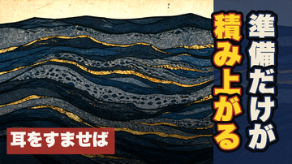
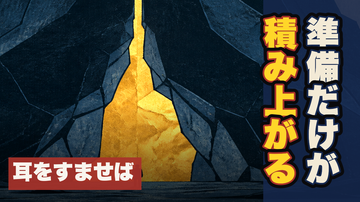

第49話 ／ content/069 ／ タイトル＋サムネ
通し視聴の承認ありがとうございます。残るのはこの2点だけで、決まれば公開予約まで進みます（公開ボタンはあなたが押します）。
型は転換コホートの <痛みの一文>。｜<作品名>×<卦> で固定。「第N話」も検索タグも付けません。3案の違いは長さだけです。
推奨44字冒頭・share_lineと逐語一致
準備が終わったら始めよう、と思っているうちに、もう何年か経っている。｜耳をすませば×大畜
企画ゲートであなたが選んだ痛みの一文そのまま。冒頭9秒の1文目とも、概要欄・固定コメントに使う share_line とも完全に同じです。タイトルと本編が同じ一つの約束になります。
37字share_lineとは不一致
準備が終わったら始めよう、と思っているうちに何年か経つ。｜耳をすませば×大畜
承認文の語をそのまま使い、末尾だけ縮めました（「もう」を落とし「経っている」→「経つ」）。冒頭の一文とほぼ同じ音で入るので、約束はだいたい保たれます。
35字冒頭ともshare_lineとも不一致
準備が終わったら始めよう、と思ったまま何年も経った。｜耳をすませば×大畜
最短。「思っているうちに」→「思ったまま」で圧縮。意味は同じですが、冒頭の一文と語が変わるので、タイトルと本編の逐語一致は崩れます。
題字はどちらも「準備だけが／積み上がる」。タイトルと共有する語を「準備」だけに抑えて、タイトルが言わない「積み上がる」を出しています。下は実際のフィード表示サイズ（360px）です。
推奨明るさ 80／基準70独立採点96点

絵＝山の断面に金の層が埋まっている図。 仕込んだ未解決は1点だけ——「なぜ山の中に金があるのか」。答えは本編の幕3（天が山の中にある＝隠れた宝）まで渡しません。
明るさ 65／基準70機械ゲート未達

絵＝山が開いて金の道が通り、その前に小さな人影。 絵としてはこちらのほうが強く、人影があるぶん「自分の話」に見えやすい。ただし平均輝度65で下限70に届きません（明部へ寄せる切り抜きも試しましたが57まで下がって悪化しました）。暗いサムネはフィードで沈むという理由で基準が置かれています。
決まったら、概要欄・チャプター・タグを作って 2026-08-18 04:00 JST の予約 まで進めます。アップロードは非公開＋予約までで、公開はあなたの操作です。